Hi, I'm Tiyenti*. I've done various things over my history of being on the Internet,
although my main hobby has generally been some form of competitive gaming. I've done a lot of
speedrunning and I tend to enjoy score and time attack games
with occasional multiplayer versus thrown in. Beyond that I'm somewhat interested in linguistics
and programming, although I don't engage in those hobbies particularly often; I have a never-published and very
incomplete conlang that's changed direction a bunch and kind of stalled out, and I don't
have too many ideas for programming projects these days.
Most of my speedrun PBs are published on Speedrun.com; you can find videos and live streams of my attempts on YouTube and Twitch. Various programming projects of mine, mostly small utilities or game mods, can be found on GitHub. I also maintain a list of writeups on this website to archive some of my longer form writing, although it's not frequently updated and there's probably stuff missing from there.
If you need to contact me, Bluesky or Mastodon are probably the easiest methods; Twitter ("""X""") remains an option too I suppose but please note I do not actively check my DMs there.
* "TNT" spelled phonetically.
Most of my speedrun PBs are published on Speedrun.com; you can find videos and live streams of my attempts on YouTube and Twitch. Various programming projects of mine, mostly small utilities or game mods, can be found on GitHub. I also maintain a list of writeups on this website to archive some of my longer form writing, although it's not frequently updated and there's probably stuff missing from there.
If you need to contact me, Bluesky or Mastodon are probably the easiest methods; Twitter ("""X""") remains an option too I suppose but please note I do not actively check my DMs there.
* "TNT" spelled phonetically.